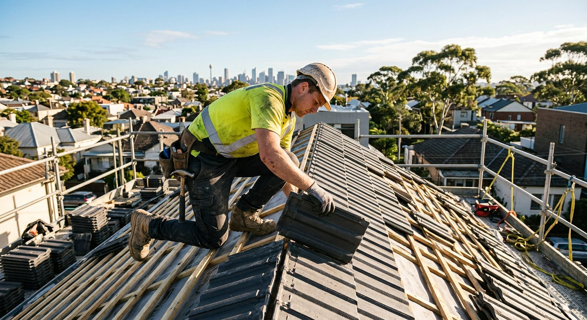
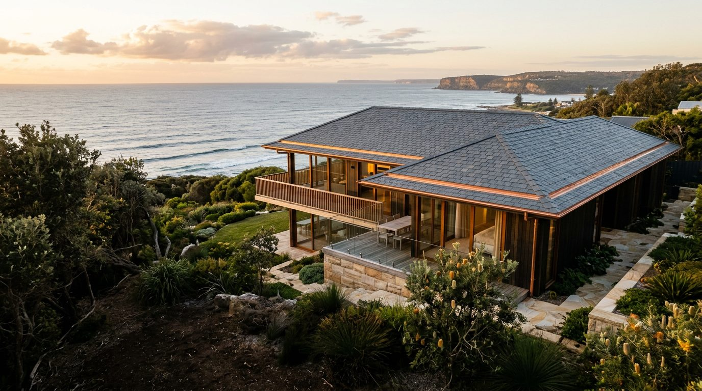
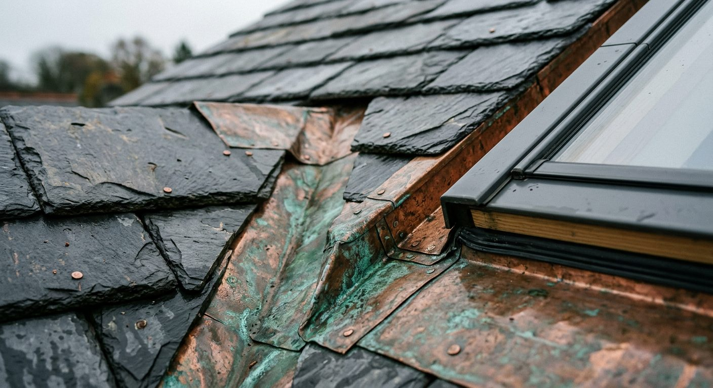

Tile re-roofing
Monier tile re-roofs
Old tiles stripped, battens checked, new concrete or terracotta tiles laid and pointed — often in a single day.
Tile roofingRepresentative image
Roofing · Re-roofing · Roofline
Colorbond, Monier tile and slate roofing across the Sutherland Shire and Sydney, from founder Ronny Couling's team. Residential, commercial and government work, licensed and HBCF insured.
Open 9am–5pm, 7 days · 18 University Rd, Miranda NSW 2228

Representative image · illustrative of the work described, not a verified company project
01 — Roofing services
From the main roof surface to the flashings, gutters and vents that make it perform, Roofing Australia covers the complete roofline — in metal, tile, slate and copper.
02 — Why Roofing Australia
Material, pitch, drainage and the meeting of roof and wall all shape the finished roofline. Ronny Couling's team has been re-roofing homes in the Shire and Sydney for 8+ years, and works to a timetable homeowners can plan around — many homes are stripped and re-roofed in a single day.
03 — How a job runs
A simple sequence, so you always know what happens next.
04 — What clients say
Reviews published verbatim from the business's Google listing.
05 — Service area
From the Miranda base, the team covers the whole Sutherland Shire — Cronulla, Caringbah, Sutherland, Engadine, Menai, Woronora and beyond — plus roofing work across greater Sydney.
Sutherland Shire · Greater Sydney, NSWStart a conversation
Call Ronny directly, send a message on WhatsApp, or request a quote and we'll come and look at the roof.
Home / Services
Colorbond, Monier tile and slate roofing, copper and architectural cladding, plus the gutters, skylights, vents, repairs and inspections around them.
Who we work for
Most of the work is residential re-roofing across the Shire, but the same team takes on commercial and government roofing projects too. Whatever the building, the brief starts with an inspection and an honest view of what the roof needs.
Not sure what you need?
Tell us what you're seeing — leaks, cracked tiles, rust, sagging gutters — and we'll arrange a look at the roof.
Home / Projects
A look at the project types the team takes on, from full tile re-roofs to slate and copper detailing. The Google listing holds 208+ project photos.

Tile re-roofing
Old tiles stripped, battens checked, new concrete or terracotta tiles laid and pointed — often in a single day.
Tile roofingRepresentative image

Slate & copper
Natural slate, copper flashings and skylight surrounds — the detailed work that finishes a considered roofline.
Copper & claddingRepresentative image
Colorbond
Tile-to-metal conversions and metal re-roofs in Colorbond steel, with matching gutters and flashings.
Colorbond roofingSwatches are indicative tones only — confirm colours against the manufacturer's current range.
Material palette
Choosing a roof is choosing how a house will look for decades. These are the materials the team works in.
Lightweight, crisp lines and a broad colour range. Suits modern homes and tile-to-metal conversions.
A familiar Shire roof. Solid, quiet in rain, and available in a range of profiles and colours.
Fired clay with natural colour that holds its tone. Suits heritage and traditional homes.
Natural slate with copper flashings and cladding, for architectural and heritage work.
See more
Follow along with current jobs on Instagram, where 2,931 people keep up with the team's work.
Home / About
Roofing Australia is led by founder Ronny Lee Couling, re-roofing in the Shire and Sydney for the past 8+ years.
The story
Ronny Couling founded Roofing Australia to do roofing properly across the Sutherland Shire. Working from Miranda, the team has spent 8+ years re-roofing homes in the Shire and across Sydney — in slate, Colorbond and Monier tile — and has grown into residential, commercial and government work.
The business is known for speed without shortcuts: where the job suits it, a home can be re-roofed in one day. Clients say the same things again and again — prompt, reliable, and kept in the loop.
Values
Calls answered, inspections booked quickly, and work scheduled without long waits.
You know what's happening on your roof at every stage of the job.
The roof is treated as a whole — material, flashings, drainage and ventilation together.
Old material removed and the site left clean at the end of the day.
Credentials
Talk to Ronny
The phone number goes straight to the team, 9am–5pm, 7 days.
Home / Service areas
Based at 18 University Rd, Miranda — a short drive from every suburb in the Sutherland Shire.
Sutherland Shire
From the beaches to the bushland edge, these are the suburbs the team works in every week.
Greater Sydney
Re-roofing, restoration and architectural roofing across greater Sydney, for homes, commercial buildings and government projects. If you're outside the Shire, call and ask — it's often no problem.
Sutherland Shire · Greater Sydney, NSWCheck your suburb
Call or send a WhatsApp with your suburb and the job, and we'll let you know.
Home / Reviews
What clients have written on Roofing Australia's Google listing, published word for word.
Your roof next
Book an inspection and see why clients call the service prompt and reliable.
Home / FAQ
General guidance for Shire and Sydney homeowners. Every roof is different, so we'll confirm the details after an inspection.
Still wondering?
Call or message 9am–5pm, 7 days.
Home / Contact
Fill in the form and it opens a ready-to-send WhatsApp message to 0424 977 583. Or just call.
0424 977 583
+61 424 977 583 · WhatsApp ↗
9am–5pm, 7 days
18 University Rd
Miranda NSW 2228
@roofingaustralia ↗ · 2,931 followers